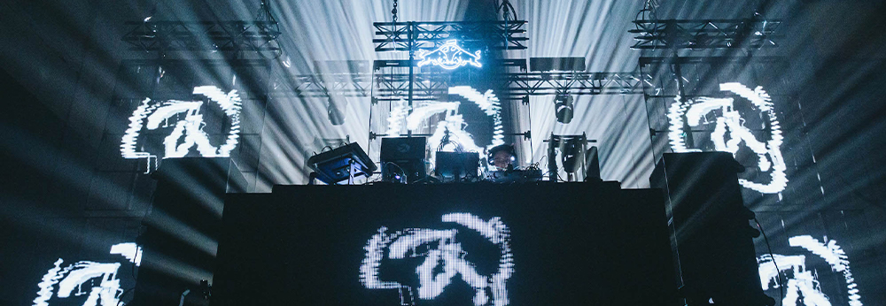

o al menos un 8/10

Para mí la música es una terapia emocional para cada día, de hecho, puede ser considerada como una medicina emocional para el estrés, el sueño y otros factores sistemáticos. No indagaré en que define a la música ser lo que es para la salud, solo he de decir que a lo largo de mi vida me he dado cuenta del valor que tiene cada canción, obra o composición independiente de su género musical. A lo que quiero llegar es que el contexto histórico, el material de producción, cada nota, cada silencio forman parte de una gran experiencia sonora, experiencia que tal vez lleva ahí muchos años pero que aún no llega a tu vida.
Las siguientes recomendaciones son específicamente de álbumes como un proyecto por sí mismo, no de canciones por si solas, ya que vienen siendo creadas en conjunto de todo un tracklist con una visión artística que busca ser experimentada. La selección de álbumes es en relación a las críticas de usuarios en foros o redes sociales en conjunto con los artículos y revistas de “crítica especializada”.
Las reseñas de artículos y revistas certificadas suelen ser muy parciales, por ende, en los foros y sitios en los que se habla de música no se toman muy en cuenta este tipo de argumentos. Por otra parte, la música es totalmente subjetiva por lo cual es totalmente valido tomar estas reseñas como recomendación para describir nuevos álbumes o artistas.
Las puntuaciones que otorgan estos medios serán utilizadas como base para la siguiente selección de álbumes, sin embargo, esta calificación puede ir variando con tal de tener una apreciación general de las declaraciones que las personas hacen acerca de la calidad de la música que escuchan.

La mayoría de los proyectos musicales son popularizados por medio de los oyentes quienes corren la voz, ya sean buenas o malas observaciones al respecto, hoy en día gracias al internet se hace descubrimiento de muchos artistas en auge gracias a que los hacen virales. Al haber una enorme comunidad de personas escuchando y recomendando música, y al mismo tiempo siendo la música tan subjetiva, las puntuaciones de los álbumes que encontramos en la web se puede considerar como general, pero nunca exacta, esto último depende de cada uno como individuo crítico, tal vez un proyecto que tenga una puntuación general de 10/10 sea un 0 para ti.
Tomando en cuenta las puntuaciones de la comunidad y de la crítica “especializada” se otorgará una puntuación a cada álbum como referencia de lo que la mayoría del público dice al respecto.
4/2/2022
Generos: Art Rock, Post-Rock, Chamber Pop
9/10

23/10/2020
Generos: Horrorcore, Experimental Hip Hop, Industrial Hip Hop
8/10

3/9/2021
Generos: UK Hip Hop, Conscious Hip Hop, Neo-Soul, Chipmunk Soul
8/10

18/6/2020
Generos: Singer-Songwriter, Indie Folk, Indie Rock
8/10

25/3/2022
Generos: Conscious Hip Hop, Southern Hip Hop, Boom Bap
8/10

25/3/2022
Generos: Hardcore Punk, Screamo, Noise Rock
8/10
15/3/2015
Generos: Conscious Hip Hop, Jazz Rap, West Coast Hip Hop
10/10

25/5/2010
Generos: Dance Punk, New Wave, Alternative Dance, Art Rock
8/10

22/11/2010
Generos: Pop Rap, Hip Hop, Art Pop, Progressive Rap
9/10

18/6/2020
Generos: Experimental Rock, Post-Rock, Noise Rock
9/10
25/4/2022
Generos: Conscious Hip Hop, Southern Hip Hop, Boom Bap
8/10
25/4/2022
Generos: Hardcore Punk, Screamo, Noise Rock
8/10